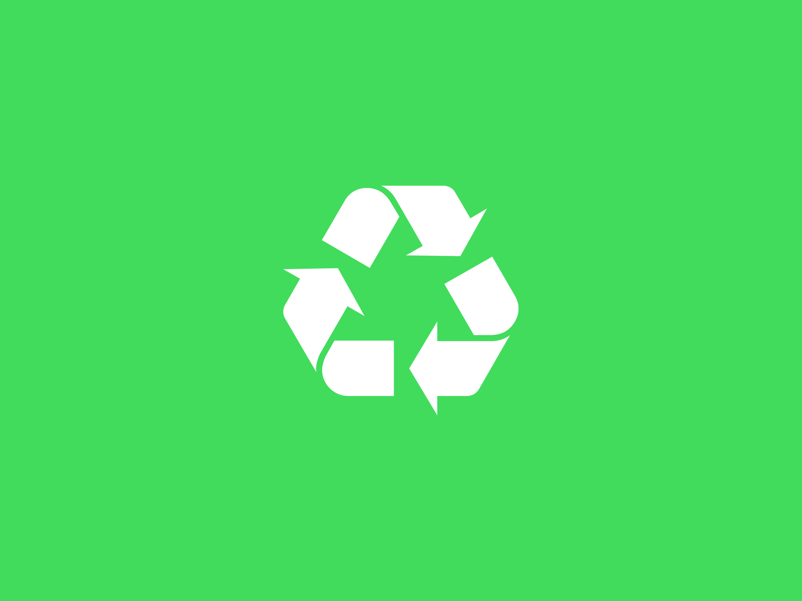
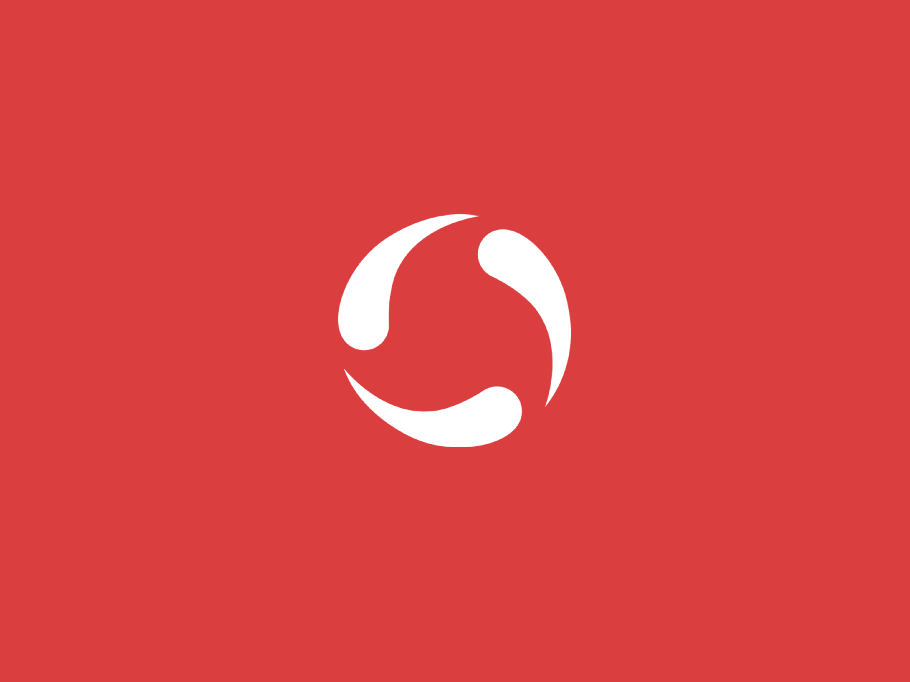

<ion-header [translucent]="true">
  <ion-toolbar>
    <ion-title>
      Squander manager
    </ion-title>
  </ion-toolbar>
</ion-header>

<!-- <ion-content [fullscreen]="true">
  <ion-header collapse="condense">
    <ion-toolbar>
      <ion-title size="large">Squander manager</ion-title>
    </ion-toolbar>
  </ion-header>

  <div id="container">
    <strong>Ready to create an app?</strong>
    <p>Find our source code <a target="_blank" rel="noopener noreferrer" href="https://github.com/dhananjayansb/squander_manager">on github</a></p>
    <br>
    <p>Project is still under development!</p>
  </div>
</ion-content> -->

<ion-content [fullscreen]="true">
  <ion-card>
    <ion-card-header>
      <div id="border">
        
        <br>
      </div>
    </ion-card-header>

    <ion-card-content>
      <div id="content">
        <!-- <ion-card-subtitle>Recyclable</ion-card-subtitle>
        <ion-card-title>Biodegradable waste</ion-card-title><br>
        Biodegradable waste is a form of waste, originating naturally from plant or animal sources, which may be degraded by other living organisms -->
      </div>
     </ion-card-content>
  </ion-card>

  <ion-card>
    <ion-card-header>
      

    </ion-card-header>

    <ion-card-content>
      <ion-card-subtitle>Non recyclable</ion-card-subtitle>
      <ion-card-title>Non-Biodegradable waste</ion-card-title>
      Non-biodegradable wastes are those which cannot be decomposed or degraded by natural agents
    </ion-card-content>
  </ion-card>
</ion-content>
